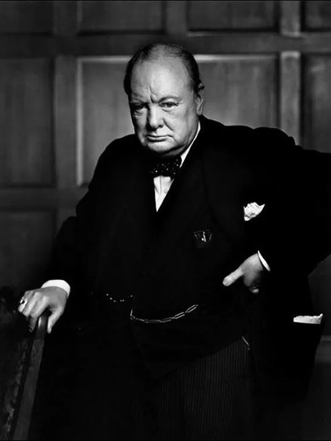

| 摄影题材的分类 | |
|
人像摄影
所谓人像摄影，就是以人物为主要创作对象的摄影形式。 人像摄影与一般的人物摄影不同：人像摄影以刻画与表现被摄者的具体相貌和神态为自身的首要创作任务，虽然有些人像摄影作品也包含一定的情节，但它仍以表现被照者的相貌为主，而且，相当一部分人像摄影作品只交待被摄者的形象，并没有具体的情节。而人物摄影是以表现有被摄者参与的事件与活动为主，它以表现具体的情节为主要任务，而不在于以鲜明的形象去表现被摄者的相貌和神态。 |
 |
|
风光摄影
风光摄影，是以展现自然风光之美为主要创作题材的原创作品（如自然景色、城市建筑摄影等） ，是多元摄影中的一个门类。从摄影术诞生那天起，风光摄影就独占鳌头。人类第一张永久性摄影作品就是风光（1826年，法国人尼埃普斯拍摄了他自家窗外的景物《窗外景色》）。风光摄影是广受人们喜爱的题材，它给人带来美的享受最全面，从作者发现美开始到拍摄，直到与读者见面欣赏的全过程，都会给人以感官和心灵的愉悦，能够在一定主题思想表现中，以相应的内涵使人在审美中领略到一定的信息成分，由此也将使人平添些过目不忘的情趣。 |
|
|
纪实摄影
纪实摄影指以纪录为第一目的，对客观事物进行真实影像反映的图片摄影。 摄影之所以诞生，就是为了记录的目的。它诞生之后所显示出来的强大的生命力，也恰恰在于它的记录功能。这是其他技术或艺术所无法比拟或取代的。因此，从广义上说，摄影就是记录。记录摄影的结果是影像记录作品。相应而分，影像记录作品包括影像新闻作品和影像纪实作品。记录摄影目的（可能并不惟一，却是首要目的）在于记录；前提是尊重客观真实；对象是客观事物的表像；记录方式是以摄影再现影像。按照纪录影像的方式和追求的价值不同来划分，记录摄影分为新闻摄影和纪实摄影。 |
|
|
静物摄影
静物摄影与人物摄影、景物摄影相对，以无生命（此无生命为相对概念，比如从海里捕捞上来的鱼虾、已摘掉的瓜果等）、人为可自由移动或组合的物体为表现对象的摄影。多以工业或手工制成品、自然存在的无生命物体等为拍摄题材。在真实反映被摄体固有特征的基础上，经过创意构思，并结合构图、光线、影调、色彩等摄影手段进行艺术创作，将拍摄对象表现成具有艺术美感的摄影作品。这就叫静物摄影 |
|
|
建筑摄影
建筑摄影系以建筑物和结构物体为对象的摄影，用摄影语言来表现建筑的专题摄影，在拍摄选题、器材选用、构图用光、捕捉瞬间等方面都有一定的专业要求。大多使用带摇摆结构的大型摄影机进行拍摄。 一幅优秀的、能被摄影界和建筑界所共同认可的作品不仅仅可被用作观赏，而且在新闻、商业上有着广泛的利用价值、特别是在建筑学术领域更有着很高的参考价值，因为国内外的建筑界，特别是大专院校的学生都习惯于通过专业书刊杂志上的建筑照片来交流、学习、并借以启迪自己的设计水准。因此，如何使建筑摄影能和我国的建筑事业同步繁荣发展，就需要建筑界和摄影界来共同努力。 |

|
|
全息摄影
全息摄影是指一种记录被摄物体反射波的振幅和位相等全部信息的新型摄影技术。 光波是一种电磁波，它在传播中带有振幅和相位的信息。普通照相是用感光材料(如照相底片)作记录介质，用透镜成象系统（如照相机）使物体在感光材料上成象。它所记录的只是来自物体的光波的强度分布图象，即振幅的信息，而不包括相位的信息。因此普通照相只能摄取二维(平面)图象。为要同时记录光波的振幅和相位的信息，可借助于一束相干的参考光，利用物光和参考光的光程差，以确定两束光波之间的相位差。因此借助参考光,便可记录来自物体的光波的振幅和相位的信息 |
|